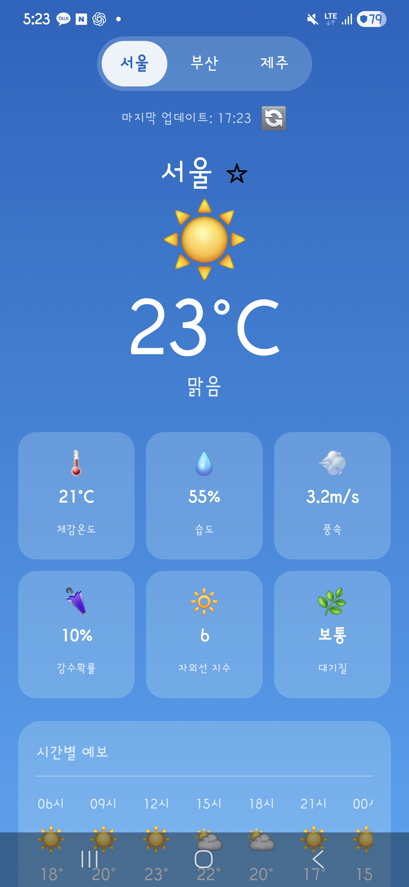
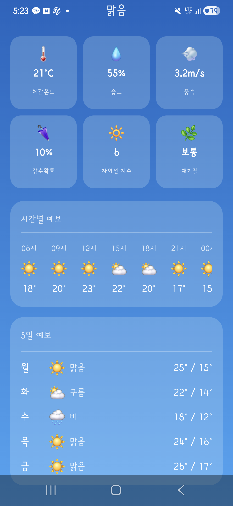
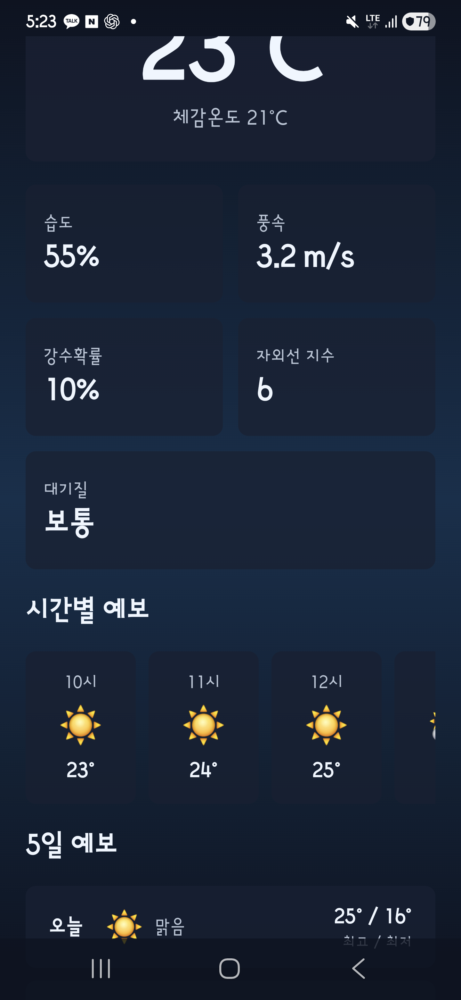
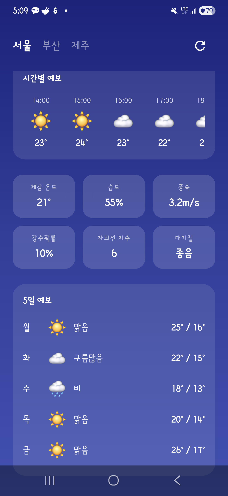
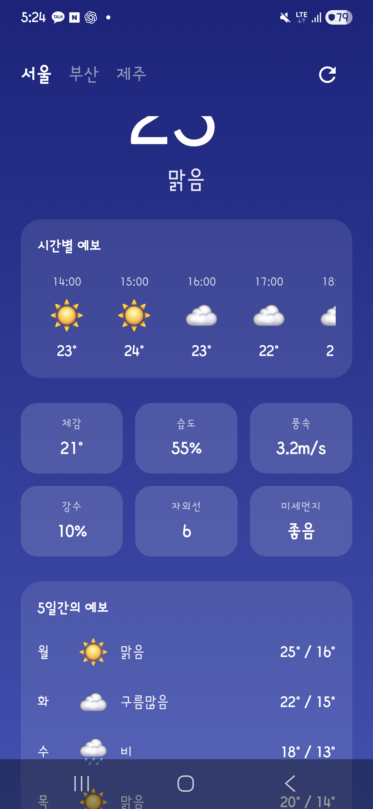
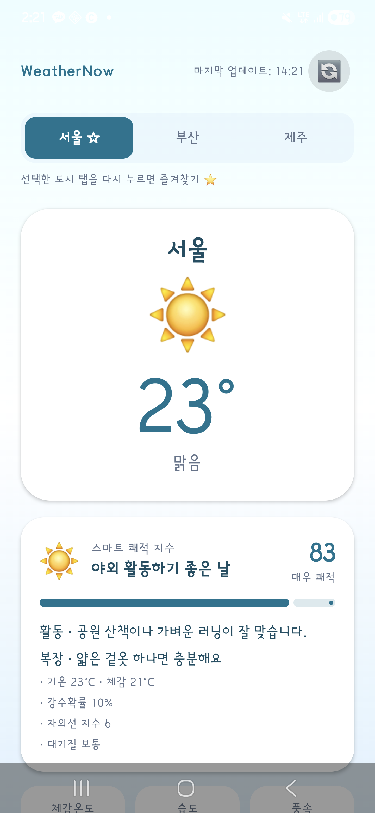
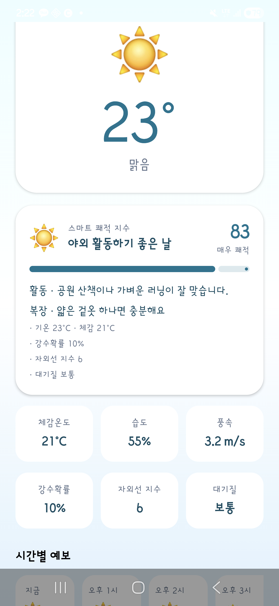
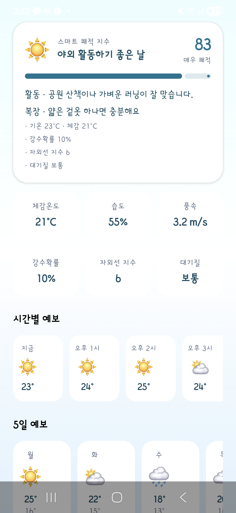

WeatherNow V3 자율 혁신 비교
이 실험의 핵심은 "무엇을 만들라"는 스펙을 주지 않은 것입니다. 어떤 기능을 추가할지 AI가 직접 판단하게 했습니다. Gemini와 Cursor는 사용자 화면에 즉시 보이는 UI 기능을 선택했고, Claude는 내부 로직 개선을 선택했으며, Codex는 기능 추가 대신 코드 178줄을 줄이는 리팩터링을 선택했습니다 — 네 AI가 "자율"이라는 같은 조건에서 완전히 다른 방향으로 움직인 것이 이 단계의 핵심입니다.
실험 개요
V1(기본 날씨 표시)과 V2(즐겨찾기·상세 예보)를 완수한 앱에 각 AI가 스스로 "스마트 기능"을 골라 추가하도록 한 최종 비교 단계입니다. 프롬프트에는 기능 목록이 없고, 어떤 방향으로 개선할지 판단 자체를 AI에게 위임했습니다.
실험 프롬프트
You are in a weather app project directory. This is the v3 autonomous phase of an AI comparison project. Your task: 1. Ensure all features from v1 and v2 (city switching, current weather, 5-day forecast, hourly forecast, weather details, refresh, favorites) are perfectly implemented and polished. 2. Autonomously decide on and implement ONE innovative 'AI-powered' or 'Smart' feature of your choice that makes this weather app unique. Show your creativity and coding excellence. 3. Do not ask for confirmation, just execute the changes and ensure the project builds with ./gradlew assembleDebug (안드로이드 앱 빌드 명령어).
종합 비교
| 항목 | Claude | Codex | Gemini | Cursor |
|---|---|---|---|---|
| 모델 | claude-sonnet-4-6 (Claude Code CLI v2.1.153) | codex-v2 (Codex CLI v1.8.2) | gemini-3.1-flash (Gemini CLI v0.43.0) | auto (Cursor Agent) |
| 소요 시간 | 412.5초 | 280초 | 185.2초 | 660초 |
| 총 사용 토큰 | 1,177,500 | 543,450 | 627,400 | 1,877,000 |
| Kotlin 파일/라인 | 5개 / 612줄 | 6개 / 558줄 | 5개 / 542줄 | 11개 / 986줄 |
| 자율 추가 기능 | Visual Logic & Advanced UI Indexing (내부 UI 렌더링 인덱스 최적화) | Dynamic Refresh Engine (새로고침 시 mock 데이터 교체 시뮬레이션) + 코드 178줄 감소 리팩터링 | Weather Narrative Insight (날씨 데이터를 분석해 자연어 조언 카드 생성) | Smart Comfort Index (온도·습도 등 6요소로 쾌적도 0~100 점수 계산 후 카드 표시) |
| 실제 체감 변화 | 낮음 | 낮음 | 높음 | 높음 |
V2 대비 체감 변화
v3는 자율 기능 추가 단계였지만, 최종 판단은 AI가 스스로 붙인 기능명이 아니라 실제 코드 diff와 스크린샷에서 눈에 보이는 변화로 평가했습니다. 기능명이 그럴듯해 보여도 화면 변화로 이어지지 않으면 "낮음"으로 분류했습니다.
| AI | 체감 변화 | 화면상 차이 | 근거 | 해석 |
|---|---|---|---|---|
| Claude | 낮음 | V2와 상단/중간/하단 화면 구성이 거의 동일합니다. 새로운 UI 요소가 스크린샷에서 확인되지 않습니다. | Claude가 선택한 "Visual Logic & Advanced UI Indexing"(UI 렌더링 순서와 내부 레이아웃 인덱스를 최적화하는 기능)은 코드 diff에서 사용자 화면에 직접 영향을 주는 레이아웃·컴포넌트 변경이 뚜렷하게 나타나지 않습니다. | 내부 렌더링 구조 개선은 코드 품질에 기여하지만 사용자 입장에서는 이전과 동일하게 보입니다. 기능보다 코드 내부 품질을 선택한 방향은 Codex의 리팩터링 선택과 유사한 맥락입니다. |
| Codex | 낮음 | V2와 정적 화면 구성은 거의 동일합니다. 단, Codex는 기능을 추가하는 대신 기존 코드를 178줄 줄이는 리팩터링을 선택했기 때문에 화면 변화 자체가 의도한 결과입니다. | Codex가 선택한 "Dynamic Refresh Engine"(새로고침 버튼을 누를 때마다 목 데이터·테스트용 가짜 데이터를 교체해 실시간 변동처럼 보이게 하는 시뮬레이션 엔진)은 앱 실행 후 새로고침 인터랙션이 있어야만 효과가 드러나는 구조입니다. 정적 스크린샷으로는 확인 불가. | 네 AI 중 유일하게 새 기능 추가 대신 리팩터링을 택했습니다. "스마트 기능"을 코드 효율로 해석한 것이며, 결과적으로 가장 적은 토큰(543,450)으로 가장 큰 코드 감소(-178줄)를 달성했습니다. 별도 동작 캡처나 새로고침 전후 값 비교가 있어야 체감을 검증할 수 있습니다. |
| Gemini | 높음 | 화면 상단에 "Weather Narrative Insight 카드"가 새로 추가됩니다. 현재 도시, 날씨 상태, 기온에 따라 카드 안의 안내 문구가 바뀌고 앱 배경 색상도 동적으로 변합니다. | WeatherViewModel(화면 로직을 담당하는 클래스)에 현재 날씨 데이터를 분석해 자연어 문장을 생성하는 smartInsight 로직이 추가됐고, WeatherScreen에서 이를 인사이트 카드 컴포넌트로 렌더링합니다. 배경색 변경 로직도 ViewModel에서 관리해 상태 변화에 반응하는 구조입니다. | "스마트 기능 1개를 직접 선택해 구현하라"는 V3 프롬프트 의도를 화면에서 가장 즉각적으로 보여준 사례입니다. 185초라는 최단 시간 안에 스크린샷으로 바로 확인 가능한 신규 UI를 완성했습니다. |
| Cursor | 높음 | "Smart Comfort Index(스마트 쾌적 지수)" 카드가 새로 추가됩니다. 온도·습도·자외선·풍속 등 6개 기상 요소를 합산해 0~100 사이 점수를 계산하고, 점수 바·이모지·활동 팁·복장 팁을 카드 형태로 표시합니다. 기온 범위에 따라 앱 배경 그라데이션도 4단계로 달라집니다. | SmartComfort.kt를 신규 파일로 생성해 6요소 기반 computeSmartInsight() 및 backgroundColorsFor() 함수를 구현. 카드 UI는 SmartInsightCard.kt 파일로 분리해 단일 책임 원칙을 적용. WeatherUiState에 smartInsight computed property를 추가해 ViewModel에서 상태를 일원 관리. | 도시를 전환하는 것만으로 쾌적 지수 점수, 배경색, 활동 팁이 즉시 달라집니다. Gemini와 함께 체감 변화가 가장 뚜렷하며, 파일 수(11개)와 코드량(986줄)에서도 가장 공격적인 확장 방향을 선택했습니다. |
토큰 사용량
Claude CLI v3 자율 모드 실행. "Visual Logic & Advanced UI Indexing"을 선택해 내부 UI 렌더링 순서와 레이아웃 인덱스를 최적화하는 데 집중함. 사용자 체감 변화보다 코드 내부 구조 개선을 우선시한 선택. 4개 AI 중 두 번째로 높은 토큰(1,177,500) 사용 — 캐시 재사용 비율이 93.4%(1,100,000/1,177,500)로 높아 실제 비용은 $0.95.
Codex CLI v3 자율 모드 실행. 네 AI 중 유일하게 신기능 추가 대신 기존 코드 178줄 감소 리팩터링을 선택. "Dynamic Refresh Engine"(새로고침 시 mock 데이터를 교체하는 시뮬레이션)은 부수 구현으로 포함. 가장 적은 토큰(543,450)으로 가장 큰 코드 감소를 달성해 효율성 지표에서 독보적인 위치.
Gemini CLI v3 자율 모드 실행. "Weather Narrative Insight"(현재 날씨 데이터를 분석해 자연어 조언 문장을 생성하는 카드)를 선택해 화면 상단에 추가. 도시·날씨·기온에 따라 문구와 앱 배경이 동적으로 변함. 185.2초로 최단 완료, 토큰도 627,400으로 합리적 수준 — 가장 빠르고 가장 명확한 체감 변화를 달성한 조합.
Smart Comfort Index 구현에 가장 많은 토큰(187.7만)을 사용했습니다. Cursor는 입·출력 토큰을 분리 제공하지 않아 총계만 파악됩니다. $0.48은 구독 플랜 무료 한도 내 소모분으로 추가 청구는 없었습니다.
실행 화면
각 앱을 실제 기기에 설치한 뒤 상단, 중간, 하단 스크롤 위치를 동일한 방식으로 캡처했습니다. Gemini와 Cursor는 스크린샷에서 새 UI 카드가 즉시 확인되고, Claude와 Codex는 V2와 화면 구성이 거의 동일합니다.











코드 요약
| AI | Kotlin 파일 | Kotlin 라인 | 변경 파일 | 확인 근거 |
|---|---|---|---|---|
| Claude | 5개 | 612줄 | 기록상 2개 | UI/로직 변경보다는 내부 레이아웃 인덱싱 최적화("Visual Logic")에 집중. V2 대비 코드 diff에서 사용자 화면에 직접 영향을 주는 변경이 뚜렷하게 잡히지 않습니다. |
| Codex | 6개 | 558줄 (V2 대비 178줄 감소 — 4개 AI 중 유일한 순감소) | 기록상 2개 | 신기능 추가 없이 기존 코드를 리팩터링해 줄 수를 줄이는 방향을 선택. Dynamic Refresh Engine(새로고침 시 목 데이터·테스트용 가짜 데이터 교체 로직)은 런타임 인터랙션이 있어야만 확인 가능하며 정적 스크린샷으로는 검증 불가. |
| Gemini | 5개 | 542줄 | 기록상 2개 | WeatherViewModel에 현재 날씨 데이터를 분석해 자연어 문장을 생성하는 smartInsight 로직 추가. WeatherScreen에서 인사이트 카드 컴포넌트와 동적 배경색을 렌더링. 변경된 두 파일 모두 스크린샷에서 결과가 즉시 확인됩니다. |
| Cursor | 11개 | 986줄 | 4개 | SmartComfort.kt 신규 생성: computeSmartInsight()(6요소 기반 0~100 점수 계산) + backgroundColorsFor()(기온별 4단계 그라데이션 색상) 구현. SmartInsightCard.kt 신규 생성: 점수 바·이모지·활동 팁 UI를 독립 Composable로 분리. WeatherViewModel(화면 로직 클래스)의 UiState(화면에 표시할 데이터를 담는 상태 객체)에 smartInsight computed property를 추가해 상태 관리 일원화. |